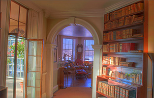

|
|
|  |

|
WinnerDoArtifactsHavePolitics.pdf
Winner, L. “Do artifacts have politics?” in The Whale and the Reactor: A Search for Limits in an Age of High Technology; Chicago, University of Chicago Press, 1986; pp. 19-39.
|
71 K
|
|
|
DyerMakingWhitePeopleWhite.pdf
Dyer, R. “Making ‘White’ People White” White: Essays on Race and Culture; London: Routledge, 1997; Chapter 10, 134-7.
|
1.0 M
|
- To what extent do scientific and technological developments occur independent of social forces?
- Is technology (or matter) value-neutral?
- Is the Internet a democratic technology?
- Are computers or computer systems morally neutral?
|
Prof. David Luebke received a B.A. in Chemistry from Colorado College in 1993 and a Ph.D. in Computer Science from the University of North Carolina in 1998. He joined the University of Virginia faculty ...
| |
|
Prof. Deborah G. Johnson is the Anne Shirley Carter Olsson Professor of Applied Ethics in the Department of Technology, Culture, and Communication, School of Engineering and Applied Science (UVA) ...
| |
|